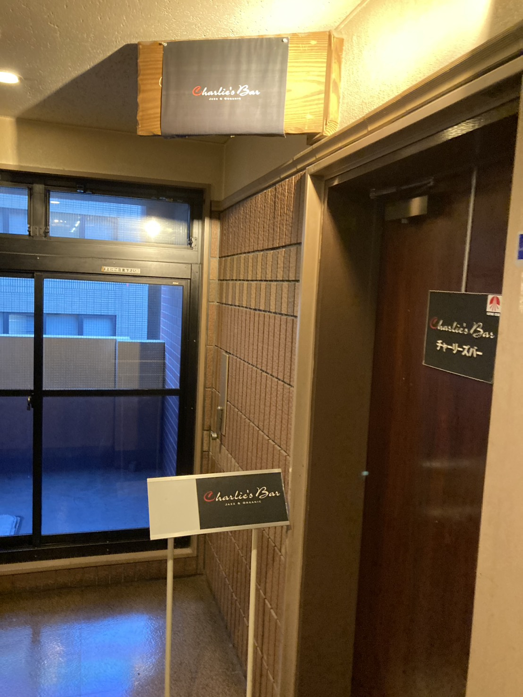
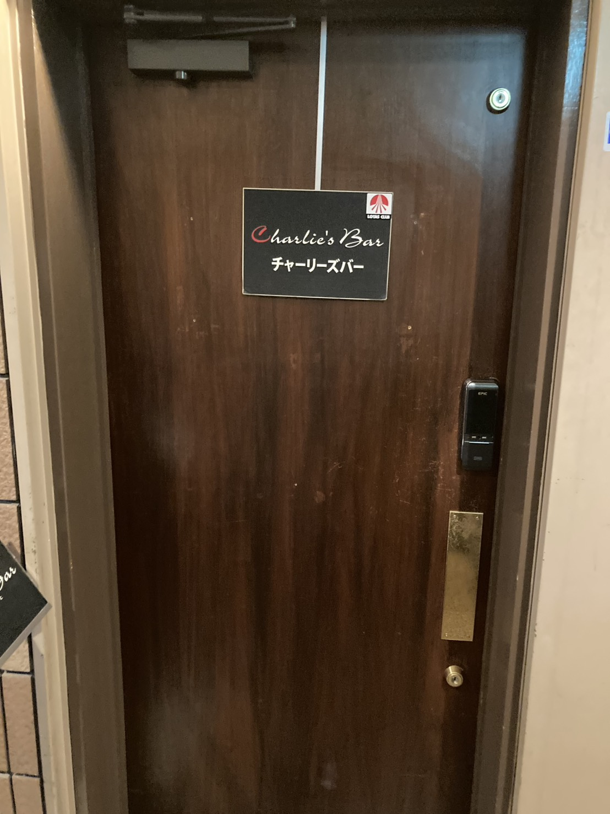
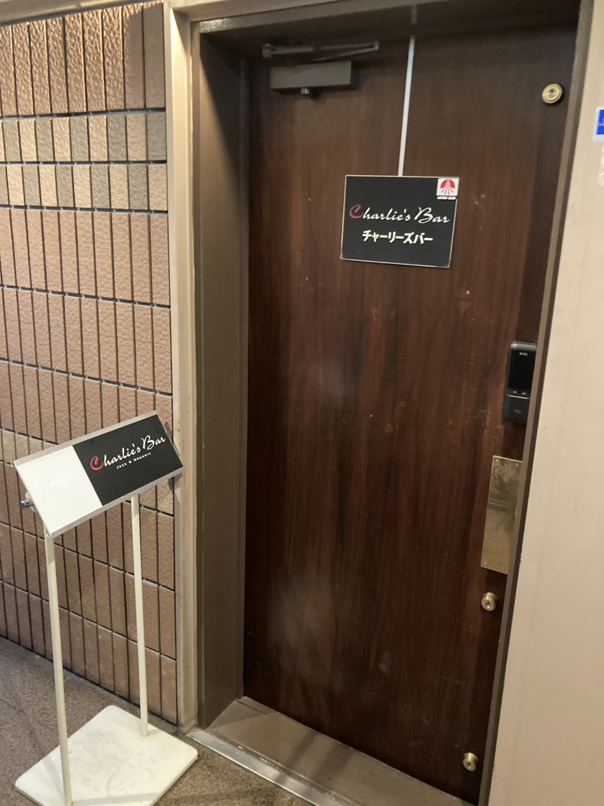
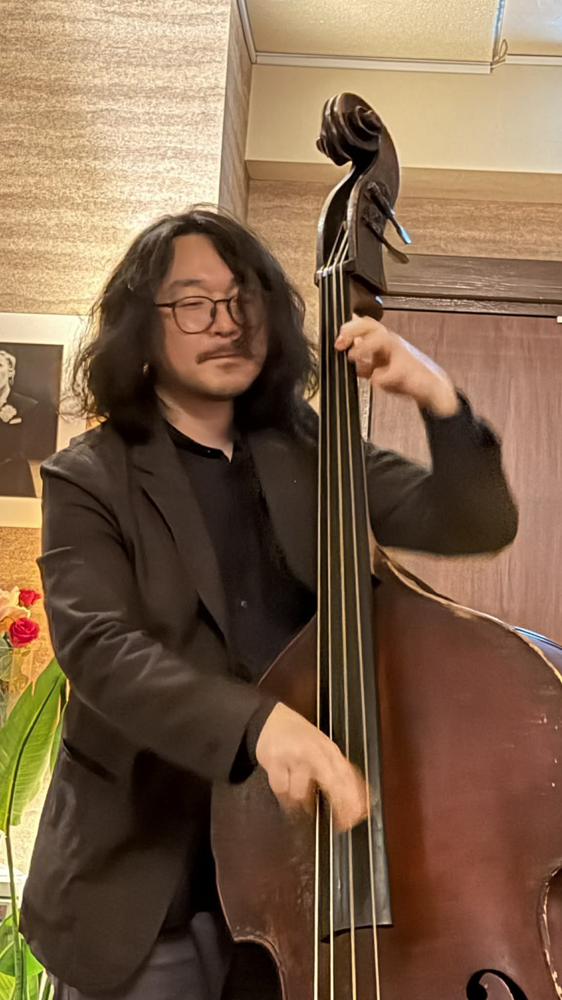

レ・ミゼラブルの挑戦
無名ながら「レ・ミゼラブル」主役オーディションで俳優・鹿賀丈史氏と最後の2人まで残った、確かな歌唱力と表現力があります。
ミュージカル「レ・ミゼラブル」の主役オーディションで最後の2人に残った実力派。
世界各国で歌い歩いた経験と100曲を超えるレパートリーが、Charlie's Barの夜を豊かに彩ります。
世界を歌い歩いた実力派ボーカルが、
Charlie's Barの夜を豊かに彩ります。
無名ながら「レ・ミゼラブル」主役オーディションで俳優・鹿賀丈史氏と最後の2人まで残った、確かな歌唱力と表現力があります。
アメリカ、イギリス、バリ、グアム、韓国、香港、マカオ、シンガポール、フィリピンなど、世界各地で歌ってきた経験が息づいています。
左団扇のボーカリストとして数々のミュージシャンと共演。スタンダードから情感あふれるナンバーまで、幅広い世界観で楽しめます。
深みのあるブラウンの空気感と、距離の近いライブ。気負わず立ち寄れて、ふと特別な夜になる空間を大切にしています。

Charlie's Bar の魅力は、ステージと客席が自然につながる親密な距離感。大きな会場では味わえない息づかいと温度を感じながら、 グラスを片手に上質な夜をお楽しみいただけます。

YouTube セクションは今後の動画展開に向けた入口として用意しています。営業案内やライブの空気感、日々の更新は Instagram と Facebook でご覧いただけます。
ゆったりと夜が開いていくファーストステージ
空間の熱が高まるメインステージ
余韻まで楽しめる締めくくりのステージ


| 店名 | 馬車道 Charlie's Bar（チャーリーズバー） |
|---|---|
| 所在地 |
〒231-0013 神奈川県横浜市中区住吉町6-77 横浜福島ビル 601号 |
| 電話 | 045-228-8331 |
| 営業日 | 月〜土 |
| 営業時間 | 18:00 〜 23:00 |
| ライブ | 19:30 / 20:45 / 22:00 の3ステージ |
| 料金 | MC ¥2,500〜 / TC ¥1,500（チャーム代込） |